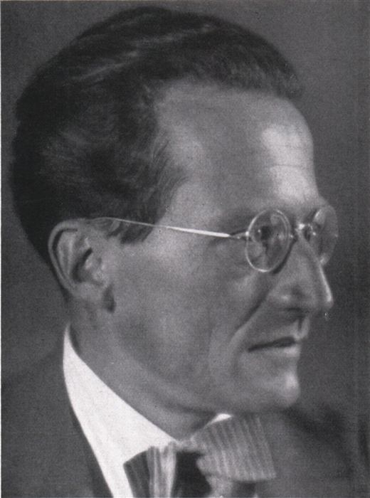
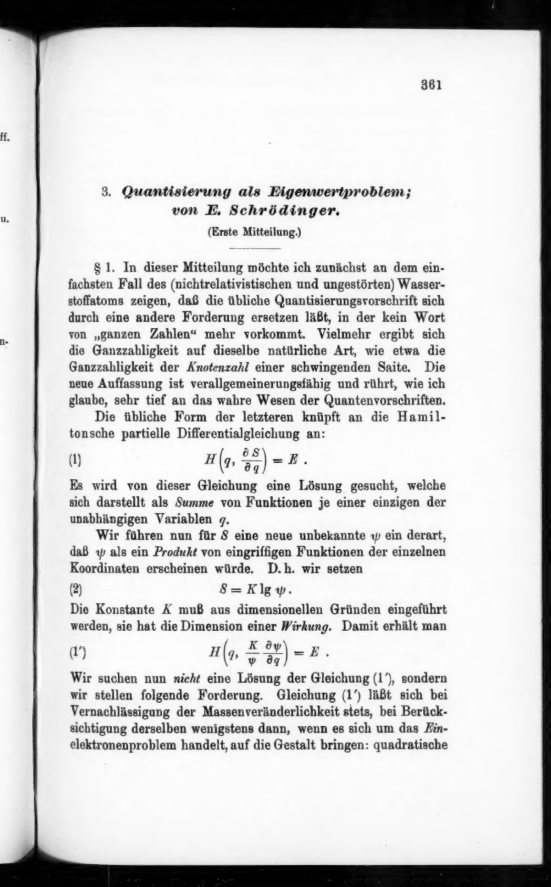
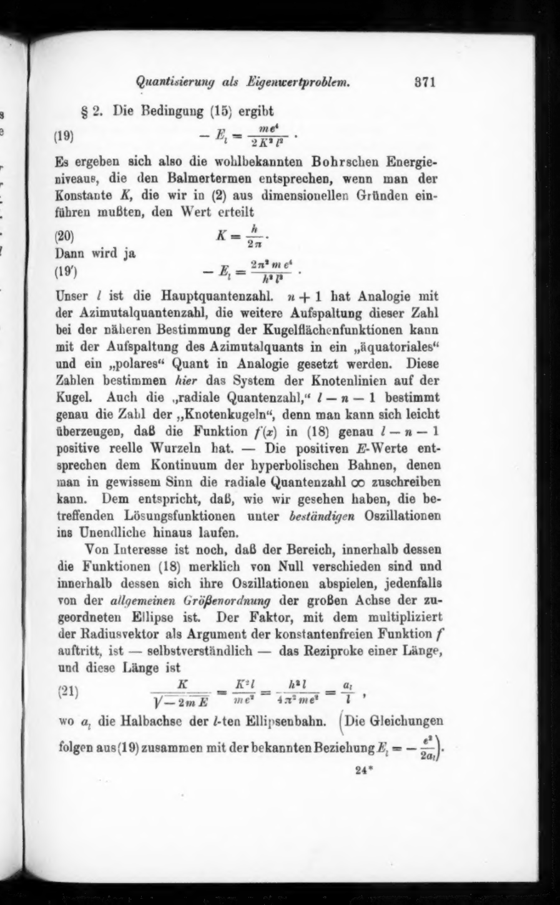
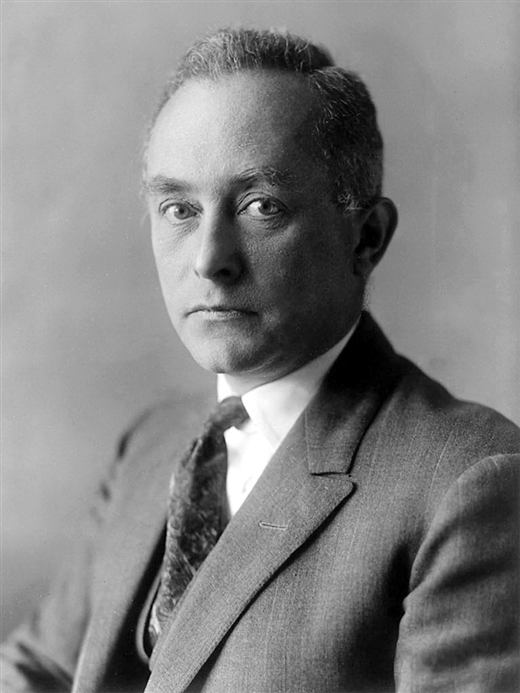

Course · Organic Electronics
The Schrödinger Equation
Zesheng Liu
Linköping University
Lecture 2 · Equation of Motion in the Quantum World · ←→ or click · F fullscreen · S presenter
Why we need a new framework
A World with Trajectories vs. A World without
Classical Mechanics · Everything is Determined
Given initial conditions $(x_0,\,p_0)$, Newton's equation $m\ddot x=-\partial_x V$ yields a unique trajectory $x(t)$. Every future moment is completely predictable.
"If one knew the position and momentum of every particle in the universe at this moment, one could predict the entire future." — The classical worldview.
Quantum Mechanics · Double-Slit Electron Experiment
Electrons are fired one by one from an electron gun and land on a screen after passing through two slits. Classically, each electron should "follow one path," leaving only two bright bands — yet the accumulating hits form interference fringes, something impossible for classical particles.
A single electron "passes through both slits simultaneously" and interferes with itself? If trajectories are invalid, what should describe the particle's "state"? This leads us to the wave function $\psi(x,t)$.
The origin story · Winter 1925 – Spring 1926
Where did this equation come from?

Erwin Schrödinger
1887–1961 · Austrian Physicist
Vienna → Zürich → Berlin → Dublin
In 1925, aged 38 — a Zürich professor known for statistical thermodynamics, not yet the figure who would rewrite physics.
- At the Zürich–ETH colloquium, Debye — having read de Broglie's 1924 thesis on matter waves $\lambda=h/p$ — assigned Schrödinger to present it.
- Debye found the idea important yet "naïve," and challenged him directly:
"If you treat a wave seriously, you need a wave equation."
→ The task: find the wave equation for matter waves.
- Two and a half weeks at Villa Herwig, Arosa, with an unidentified companion.
- Solved the hydrogen-atom stationary equation — energy levels matched Bohr's formula exactly. A decisive test.
Biographer Walter Moore called it Schrödinger's "late erotic outburst" — a creative burst near forty.
- Jan 27: first paper "Quantisierung als Eigenwertproblem" submitted to Annalen der Physik.
- Four papers in six months — the equation reached its modern form.
- Weyl supplied the eigenvalue mathematics; Born added the $|\psi|^2$ probability interpretation.
The original manuscript · 1926
First Paper — Original Scanned Pages
E. Schrödinger, "Quantisierung als Eigenwertproblem" (Erste Mitteilung), Annalen der Physik 79, 361–376 — submitted January 27, 1926.

Title, authorship, the opening Hamilton–Jacobi substitution $S = K\log\psi$, and the first eigenvalue equation.

"Es ergeben sich also die wohlbekannten Bohrschen Energieniveaus …"
The hydrogen energy levels are perfectly reproduced by the new theory.
Click image to enlarge · Download full PDF (16 pages · 2.5 MB) · Public domain, Internet Archive
Schrödinger equation · 1926
The Equation
$i\hbar\,\dfrac{\partial\psi}{\partial t}$ — the rate of change of the wave function in time. First-order time derivative + imaginary unit $i$ keeps the evolution norm-preserving.
$-\dfrac{\hbar^2}{2m}\,\dfrac{\partial^2\psi}{\partial x^2}$ — the second spatial derivative reflects the wave's "curvature," corresponding to classical kinetic energy $p^2/2m$.
$V(x,t)\,\psi$ — the external potential experienced by the particle, such as the Coulomb potential of a nucleus or the periodic potential of a molecule, identical in form to classical mechanics.
$\psi\in\mathbb{C}$ — complex-valued wave function · $\hbar = h/2\pi \approx 1.055\times 10^{-34}$ J·s · $m$ — particle mass · $V$ — potential energy
How Schrödinger guessed it
"Deriving" the Schrödinger Equation from a Plane Wave
Step 1 · Starting point: de Broglie relations
Two relations for matter waves (from Planck–Einstein and de Broglie):
Frequency $\leftrightarrow$ energy, wave number $\leftrightarrow$ momentum.
Step 2 · Try the simplest wave: the plane wave
A free particle corresponds to an infinitely extended monochromatic wave:
Differentiate twice and see what can be "read off":
$\dfrac{\partial^2\psi}{\partial x^2} = -k^2\,\psi$ → contains $k^2$
Step 3 · Extract the "reading rules" for ω and k²
Inverting the two relations above:
Combined with de Broglie relations $E=\hbar\omega,\ p=\hbar k$:
Energy and momentum are "translated" into differential operators acting on $\psi$.
Step 4 · Substitute into the classical energy relation
Classical energy of a non-relativistic particle:
Multiply both sides by $\psi$:
Substitute the two "translations" from Step 3 — $E\psi\to i\hbar\,\partial_t\psi$, $p^2\psi\to -\hbar^2\,\partial_x^2\psi$:
Exact match — this is the Schrödinger equation.
Step 5 · Linear extension
The equation holds for a single plane wave $e^{i(kx-\omega t)}$. Because the equation is linear, any superposition of different $k$
is also automatically satisfied. This extends the formula from "monochromatic waves" to arbitrary wave packets and superposition states.
The above is analogy + inspired guesswork: the equation is assembled from de Broglie relations + plane waves + classical energy. It cannot be derived from Newtonian mechanics — its validity is ultimately confirmed by experiment (hydrogen energy levels).
Part I · State
The Wave Function ψ(x,t) — State of a Quantum Particle
Why Classical Trajectories Break Down
Even a single electron in a double-slit experiment forms interference fringes. If the electron follows a definite trajectory, passing only through the left or right slit, how can it "sense" the other slit?
The classical description $(x(t),p(t))$ must be replaced.
The Quantum Mechanical Approach
A complex-valued function $\psi(x,t)\in\mathbb{C}$ completely describes the state of the particle.
Complex numbers provide two degrees of freedom: amplitude and phase — phase is the key to interference.
Born's Probabilistic Interpretation (1926)
$|\psi|^2$ is the probability density, with units [length]$^{-1}$.
An overall phase factor $e^{i\alpha}$ does not affect $|\psi|^2$ and has no physical meaning.
Single-valued · Continuous (when $V$ is finite, both $\psi$ and $\psi'$ are continuous) · Square-integrable
Part II · Interpretation
Born's Statistical Interpretation — What does ψ Mean?

Max Born
1882–1970 · German Physicist
Awarded for: "fundamental research in quantum mechanics, especially the statistical interpretation of the wave function"
The equation yields $\psi$ — but what is $\psi$? Born answered in 1926.
Born's Central Claim
$\psi$ itself is not observable (it is complex); what is observable is the squared modulus $|\psi|^2$, the probability density.
Total probability = 1. An overall phase $e^{i\alpha}$ leaves $|\psi|^2$ unchanged — physically meaningless.
Schrödinger read $|\psi|^2$ as charge density — a continuous distribution. Born's probabilistic reading dissatisfied him, but experiment sided with Born.
① Single-valued: only one probability at each point.
② Continuous: when the potential is finite, $\psi$ and its first derivative are both continuous.
③ Square-integrable: $\int|\psi|^2 dx < \infty$, so normalization is possible.
Part III · Properties
Basic Properties of the Schrödinger Equation
$\psi_1,\psi_2$ solutions $\Rightarrow c_1\psi_1+c_2\psi_2$ too — the superposition principle, origin of interference.
The initial state $\psi(x,0)$ uniquely determines $\psi(x,t)$ thereafter — evolution is fully deterministic.
The $i$ forces solutions to be complex; a purely real $\psi$ cannot satisfy the equation.
$\dfrac{d}{dt}\int|\psi|^2 dx = 0$ — a normalized state stays normalized; particles never appear or vanish.
$m\,d\langle x\rangle/dt = \langle p\rangle$, $d\langle p\rangle/dt = -\langle \partial V/\partial x\rangle$ — Newton's equations in the macroscopic limit.
A fundamental postulate, on par with $F=ma$ — justified by experiment, not derivable from anything deeper.
Part IV · Stationary states
Separation of Variables → Time-Independent Schrödinger Equation
Derivation: Step by Step
Assumption: $V = V(x)$ does not depend explicitly on time.
- Assume a product form: $\psi(x,t)=\varphi(x)\,T(t)$, substitute into the TDSE: $$i\hbar\,\varphi\,\dot T = T\!\left[-\tfrac{\hbar^2}{2m}\varphi'' + V\varphi\right]$$
- Divide both sides by $\varphi T$; the left side depends only on $t$, the right only on $x$: $$i\hbar\,\frac{\dot T}{T} = \frac{1}{\varphi}\!\left[-\frac{\hbar^2}{2m}\varphi'' + V\varphi\right] = E$$
- Why can they both equal a constant? The left side varies with $t$; the right varies with $x$; yet they are always equal, so both sides must equal the same constant $E$.
- Time equation: $i\hbar\dot T = ET \;\Rightarrow\; T(t) = e^{-iEt/\hbar}$
- Spatial equation (Time-Independent Schrödinger Equation):
Complete stationary-state solution: $\psi_n(x,t)=\varphi_n(x)\,e^{-iE_n t/\hbar}$
Physical Meaning of Stationary States
The phase rotates, but the probability density does not change with time. Atomic orbitals (1s, 2p, …) are all stationary states — this is why they are stable.
The TISE is a second-order ODE. With boundary conditions (bound states require $\varphi\to 0$), not every $E$ yields a physically acceptable solution — only the discrete set $\{E_n\}$ does. This is the mathematical origin of quantization.
Lecture 3 solves the infinite square well by hand, verifies $E_n \propto n^2$, and applies the result to conjugated molecules to estimate the HOMO-LUMO gap.
Part V · Observables
Operators and Expectation Values
The simplest operator: multiplication by coordinate $x$.
From de Broglie: $e^{ikx}$ is its eigenfunction with eigenvalue $\hbar k = p$.
Kinetic energy + potential energy; the generator of time evolution in the TDSE.
Expectation Value — the "Average Measurement Outcome" in QM
For $\hat A = \hat x$:
The position mean weighted by probability density — exactly analogous to a classical weighted average.
For $\hat A = \hat p$:
Note that $\hat p$ must act between $\psi^*$ and $\psi$ — the order cannot be arbitrarily reversed.
In quantum mechanics, "position" or "momentum" is not a single number but a distribution of possible outcomes. Operators encode this distribution into the equations; expectation values give the experimentally reproducible mean.
Part VI · Commutator
Commutator [x̂, p̂] = iℏ — Step-by-Step Derivation
Proof for an Arbitrary Function f(x)
The commutator $[\hat A,\hat B]=\hat A\hat B-\hat B\hat A$ is itself an operator and must act on a function to be meaningful.
- Compute $\hat x\hat p\,f$: $$\hat x\hat p\,f = x\cdot\left(-i\hbar\frac{df}{dx}\right) = -i\hbar\, x f'$$
- Compute $\hat p\hat x\,f$, applying the product rule: $$\hat p\hat x\,f = -i\hbar\frac{d}{dx}(xf) = -i\hbar(f + xf')$$
- Subtract: $$[\hat x,\hat p]\,f = -i\hbar xf' - (-i\hbar f - i\hbar xf') = i\hbar f$$
- Since $f$ is arbitrary, we obtain the canonical commutation relation:
Physical Meaning of Commutation
- If $[\hat A,\hat B]=0$, both observables can simultaneously have definite values; measurement order does not matter.
- If $[\hat A,\hat B]\ne 0$, they cannot both be precisely determined simultaneously; intrinsic uncertainty exists.
- $[\hat x,\hat p]=i\hbar\ne 0$ → the uncertainty principle for position and momentum follows.
In classical mechanics $\{x,p\}_{\text{Poisson}}=1$; the quantization rule replaces Poisson brackets: $\{\cdot,\cdot\}\to \frac{1}{i\hbar}[\cdot,\cdot]$. This is the central idea of canonical quantization.
Measuring position then momentum ≠ measuring momentum then position. The disturbance between the two measurements differs by $i\hbar$ — not a technical flaw, but an intrinsic structure of nature.
Heisenberg · 1927
The Uncertainty Principle — Nature's Intrinsic Constraint
Derived from the Commutation Relation
Robertson's inequality: for any two Hermitian operators $\hat A,\hat B$,
Substituting $[\hat x,\hat p]=i\hbar$ immediately gives $\Delta x\Delta p\ge\hbar/2$.
This Is Not Measurement Error
- Even with perfectly precise instruments, the inequality still holds.
- It reflects a structural incompatibility between $\hat x$ and $\hat p$, determined by the commutator.
- As $\hbar\to 0$ (classical limit), the right side vanishes and both can be precisely defined simultaneously.
Part VII · Superposition
Superposition Principle
Linearity → Superposition
The TDSE is linear. If $\varphi_n$ are energy eigenstates, then
is also a valid solution, with normalization requiring $\sum_n|c_n|^2=1$.
Measuring energy yields $E_n$ with probability $|c_n|^2$. Before measurement, the system is simultaneously in all components — not secretly in one definite state.
After measurement the system randomly jumps to eigenstate $\varphi_k$ with probability $|c_k|^2$. The remaining components irreversibly vanish. Collapse is not described by the TDSE — this is at the heart of the philosophical debates in quantum mechanics.
Interference Term — the Essence of Superposition
For a two-state superposition, expand $|\psi|^2$:
The third term is the interference term, oscillating at the Bohr frequency:
The frequency of light emitted by atoms and the emission color of OLEDs are both determined by this frequency.
Summary
Five Key Points of This Lecture
Wave Function + Born Interpretation
$\psi\in\mathbb{C}$; $|\psi|^2$ is probability density; $\int|\psi|^2 dx=1$; overall phase has no meaning.
Schrödinger Equation
The TDSE is linear, first-order, and complex — a postulate. Given the initial state, evolution is uniquely determined and probability is conserved.
Stationary States + Quantization
TISE $\hat H\varphi=E\varphi$; boundary conditions → discrete $\{E_n\}$; stationary-state $|\psi|^2$ is time-independent.
Commutation → Uncertainty
$[\hat x,\hat p]=i\hbar \Rightarrow \Delta x\Delta p\ge\hbar/2$; intrinsic constraint, not instrument error.
Superposition
Linearity allows superposition states; the interference term oscillates at the Bohr frequency $\nu_{21}=(E_2-E_1)/h$ — the frequency of atomic emission and OLED light.
Thinking questions
Post-lecture Questions
How does the probability density of the superposition state $\psi=(\varphi_1+\varphi_2)/\sqrt{2}$ evolve in time? Expand $|\psi(x,t)|^2$, identify the interference term, and write down the oscillation frequency.
The momentum eigenstate of a free particle is the plane wave $e^{ikx}$. Why is it completely delocalized in position space ($|\psi|^2$ uniform everywhere)? How is this related to $\Delta x\Delta p\ge\hbar/2$?
Next lecture
Particle in a Box
& Conjugation Length
The first model to solve the TISE by hand: the infinite square well.
Use quantized energy levels to estimate the HOMO-LUMO gap of conjugated molecules and OLED emission color.